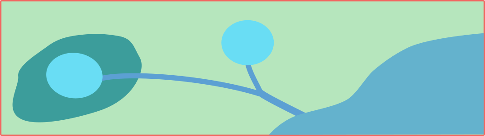

Scenarios#
Scenarios in pystorms#
Scenarios are the primary components of the pystorms library. These scenarios are designed to be used for quantitatively evaluating the performance of stormwater control algorithms.

- Each is scenario comprises of the following:
An underlying stormwater network
A system driver (e.g., rain event)
A set of controllable assets
A set of observed states
A control objective
pystorms includes 7 scenarios with diverse set of objectives; these are summarized in the table below.
Scenario |
Network Topology |
Control Objectives |
|---|---|---|
theta |
2 sq.km idealized separated stormwater network |
Maintain the flows at the outlet below a threshold and avoid flooding (2 storage basin outlets) |
alpha |
0.12 sq.km residential combined sewer network |
Minimize total combined sewer overflow volume (5 weirs at interceptor connections) |
beta |
1.3 sq.km separated stormwater network with a tidally-influenced receiving river |
Minimize flooding (one storage basin outlet; one pump; one inline storage dam) |
gamma |
4 sq.km highly urban separated stormwater network |
Maintain channel flows below threshold and avoid flooding (11 detention pond outlets) |
delta |
2.5 sq.km combined sewer network in which the stormwater ponds also serve as waterfront |
Maintain water levels within upper and lower thresholds for water quality and aesthetic objectives (4 storage basin outlets; 1 infiltration basin inlet) |
epsilon |
67 sq.km highly urban combined sewer network |
Maintain sewer network outlet total suspended solids (TSS) load below threshold and avoid flooding (11 in-line storage dams) |
zeta |
1.8 sq.km combined and separated sewer network (based on the Astlingen benchmarking network) |
Maximize flow to downstream wastewater treatment plant and minimize total combined sewer overflow volume (4 storage basin outlets) |
Please refer to manuscript for additional details on the individual scenarios.
Jupyter Notebooks#
We have included jupyter notebooks demonstrating the use of pystorms scenarios for testing control algorithms.
Theta: Scenario theta
Alpha: Scenario alpha
Beta: Scenario beta
Gamma: Scenario gamma
Delta: Scenario delta
Epsilon: Scenario epsilon
Zeta: Scenario zeta
The following section outlines the use of scenario theta for evaluating equal-filling degree controller.
Example: Scenario Theta#
This scenario was created to serve as a unit test for control algorithms. In this scenario, two idealized basins (in parallel) of \(1000m^3\) are draining into a downstream water body. Outlets in the basins (\(1m^2\)) are at the bottom and can be controlled throughout the duration of the simulation.
{kind=link}
Objective#
Maintain the flow of water at the outlet of the stormwater network below \(0.5 m^3s^{-1}\). The degree of success or failure of the algorithm to achieve the objective is computed based on the following metric.
States#
Water levels (\(m\)) in the two basins at every step, indexed by the order of the basin are defined as the states in this scenario.
Control actions#
Percent of valve opening \([0,1]\) at the outlet of each basin.
Example: Equal-filling Controller#
import pystorms
import numpy as np
import matplotlib.pyplot as plt
%matplotlib notebook
env = pystorms.scenarios.theta()
done = False
while not done:
done = env.step(np.ones(2))
print("Uncontrolled Performance : {}".format(env.performance()))
Uncontrolled Performance : 0.1296391721430919
Lets take a look at the network outflows in the uncontrolled response
plt.plot(env.data_log["flow"]["8"])
plt.ylabel("Outflows")
Text(0, 0.5, 'Outflows')
Now, lets see if we can design a control algorithm to maintain the flows below \(0.5 m^3s^{-1}\)
Design of such a control algorithm can be approached in many ways. But the fundamental idea behind any of these algorithms would be to hold back water in the basins and coordinate the actions of these basin such that their cumulative outflows are below the desired threshold. In this example, we will design a simple algorithm that achieves this.
def controller(depths,
N=2,
LAMBDA=0.5,
MAX_DEPTH=2.0):
# Compute the filling degree
f = depths/MAX_DEPTH
# Estimate the average filling degree
f_mean = np.mean(f)
# Compute psi
psi = np.zeros(N)
for i in range(0, N):
psi[i] = f[i] - f_mean
if psi[i] < 0.0 - 10**(-4):
psi[i] = 0.0
elif psi[i] >= 0.0 - 10**(-4) and psi[i] <= 0.0 + 10**(-4):
psi[i] = f_mean
# Assign valve positions
actions = np.zeros(N)
for i in range(0, N):
if depths[i] > 0.0:
k = 1.0/np.sqrt(2 * 9.81 * depths[i])
action = k * LAMBDA * psi[i]/np.sum(psi)
actions[i] = min(1.0, action)
return actions
env_controlled = pystorms.scenarios.theta()
done = False
while not done:
state = env_controlled.state()
actions = controller(state, 0.50)
done = env_controlled.step(actions)
plt.plot(env_controlled.data_log["flow"]["8"], label="Controlled")
plt.plot(env.data_log["flow"]["8"], label="Uncontrolled")
plt.ylabel("Outflows")
plt.legend()

print("Controlled performance: {} \nUncontrolled performance: {}".format(env_controlled.performance(), env.performance()))
Controlled performance: 0.0
Uncontrolled performance: 0.1296391721430919
Controller is able to maintain the outflows from the network below the desired threshold.